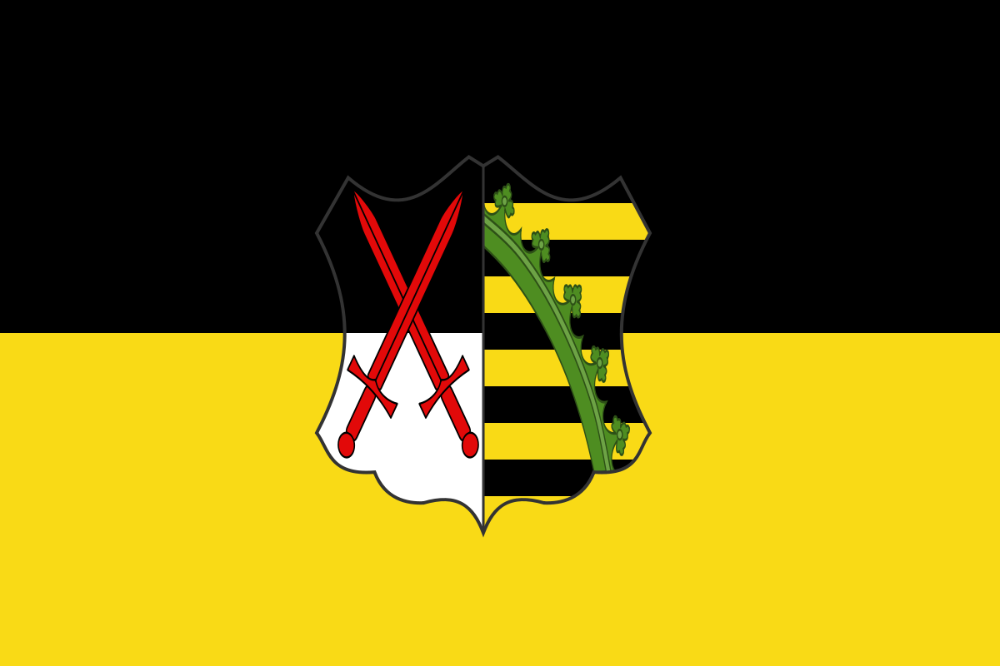

КРАЇНИ ТА СУБ'ЄКТИ
СВЯЩЕНОЇ РИМСЬКОЇ ІМПЕРІЇ
«Священна Римська імперія» - держава, заснована 962 р. саксонським королем Оттоном I шляхом захоплення Північної та Середньої Італії. У X-XIII ст. до складу імперії входила Німеччина, більшість Італії, королівство Бургундія, у васальній залежності перебувала Чехія. Але влада імператора фактично поширювалася частина Німеччини, в Італії йому підкорялися лише під тиском сили. З 1338 імператорський титул отримували німецькі королі без коронації в Римі, остаточно скасованої в 1508; з 1438 р., коли імператорської короною опанували Габсбурги, поза Німеччиною титул імператора все більше втрачав владу і перетворювався на почесне звання, а «Священна Римська імперія» - в ефемерну державну освіту, формальні та фактичні території якої постійно скорочувалися. У XV – XVII ст. зі складу «Священної Римської імперії» вийшли Чехія, Швейцарський союз та Нідерланди, зменшилася кількість німецьких князівств, що залишалися підкорені імператору. У 1806 р. останній імператор Франц II відмовився від свого титулу та імперія формально перестала існувати.
Прапор Австрійської імперії (імператор Священної Римської імперії).
Прапор курфюшества Прусія.
Прапор королівства Бургундія (не плутати з прапором Іспанської імперії, вони дуже схожі).

Прапор курфюшества Саксонія.
Прапор Курфюшества Баварія.